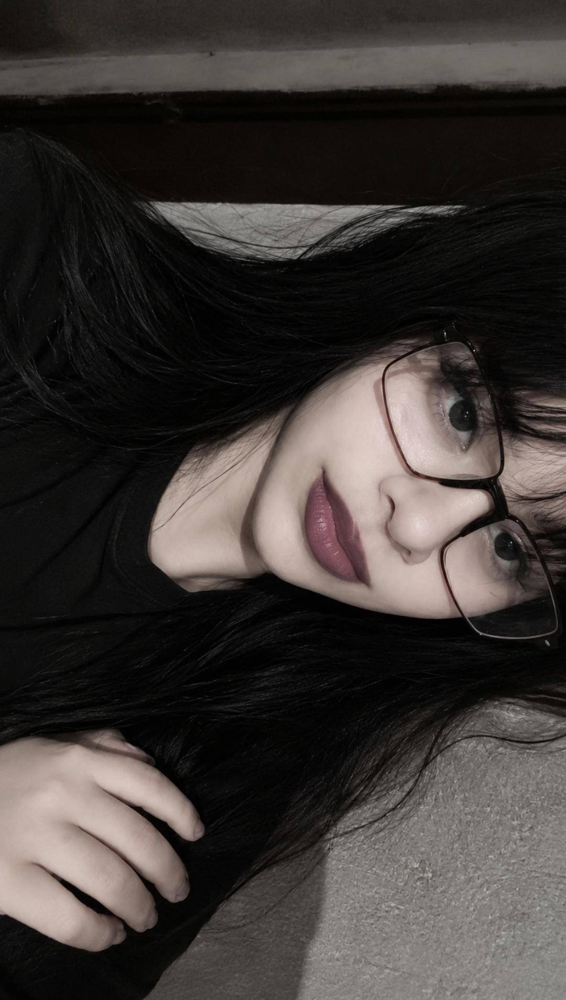

Feliz Dia dos Namorados, Meu Amor
Quem diria que tudo começaria em uma partida de Free Fire, né?
No meio de tantas pessoas, justamente você apareceu na minha vida. E sinceramente... eu nunca imaginaria que alguém pudesse se tornar tão importante para mim.
Aos poucos, nossas conversas deixaram de ser apenas conversas. Sem perceber, você começou a fazer parte dos meus dias.
O mais estranho é que aconteceu naturalmente. Quando eu vi, você já era a pessoa que eu mais gostava de encontrar.
Mesmo com a distância, o que eu sinto por você é uma das coisas mais reais que eu já senti.
E hoje eu consigo admitir sem medo nenhum:
eu estou completamente apaixonado por você.